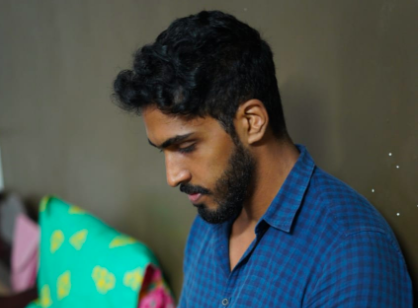
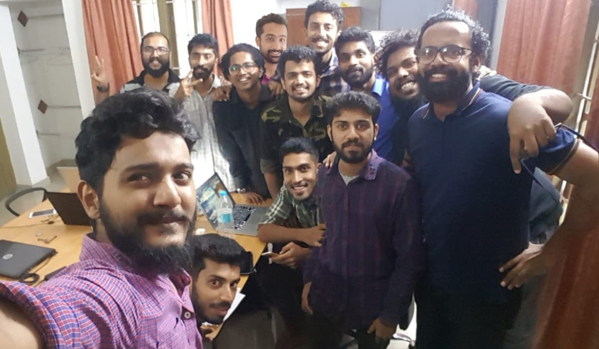
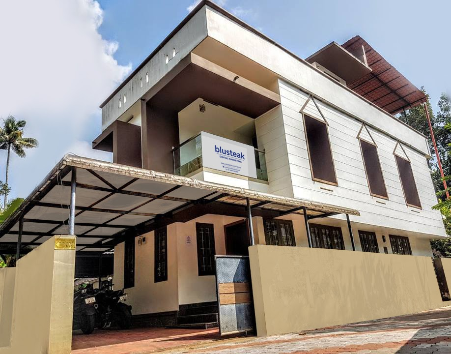
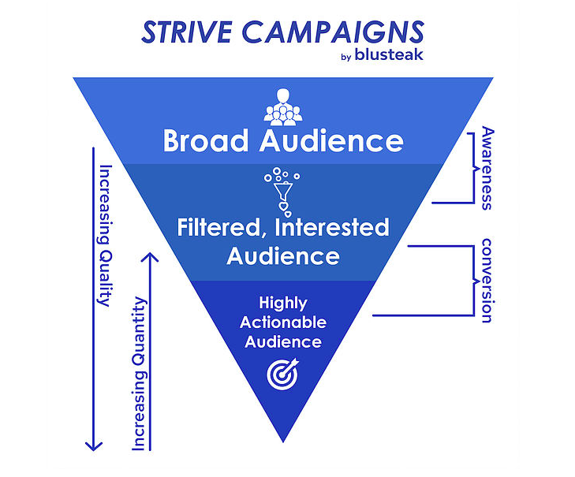

From our childhood, me and my brother always had a dream about making a
mark in the world, and to pursue our dreams so that we can influence the
lives of many. But, we had no idea, our mind was blank except for the
urge to do something of our own.
By the time Facebook became a thing in India and Orkut became history,
even though we had no internet connection in our homes, we would go to
the nearest cafe to surf through the net, and especially really enjoy
all the internet "memes" thoroughly. Inspired by many of the much loved
meme pages in Facebook, we decided to start one of our own. We initially
tried to build up several pages but everything failed miserably, but our
perseverance gave us the energy to give it one more shot. This time
fortune was on our side, the last two portals that we began ended up
getting more that 5.5 Million followers. We managed and generated
sufficient income from those sources for about 3 years. All these time
me & my brother were doing our schooling & college degrees.

We decided that we needed our own platform or an app to scale and stabilize the business, By that time apart from us brothers, Dixon Alex also made it into the list of cofounders. We then together developed and launched an app called Dudeapp, which was a UGC segregation platform. In the initial month it saw itself grow into a user base of more than 50,000. The app was covered by several news outlets and gave us tremendous exposure. Unfortunately, due to technical disabilities we had to shut it down soon.

We got the opportunity to learn in depth with tremendous exposure on
practical experience on social media platforms. At that time, we knew
that we have developed a set of skills that is in huge demand for the
business world. So decided to start a social media agency which was one
among the first of its kind in Kerala, we named it Blusteak Media.
We had no experience in business development or in how to build up real
world professional connections. We had only a very few amount of money
left with us since all the other revenue sources has been shutdown.
Hence we had only one shot at marketing our company and if it did not
hit the spot, that would mark the end of it and we would have been
forced to quit and join some other day jobs to sustain our daily needs.
While we were brainstorming ideas to effectively market the startup to
businesses, one of our friends, Dimple Meera Jom contacted us and shared
her idea of conducting a 1 day workshop on Social Media Marketing to
students and businesses. We thought it out and realised that, this
workshop could help us connect with brands and would give our startup a
quick boost. Hence we conducted the one day workshop “Swipe Up”.

Just as we thought, it turned out that one of the main sponsors of Swipe Up was interested to test out digital marketing for their brand. After a couple of meetings, we were able to land our very first client and their budget was enough for us to run the company and to stabilize it by hiring new team members.
Several other brands soon associated with us we started rolling out effective online result oriented campaigns.We then moved to a new multi-storied office which was situated even closer to the city of Kottayam. Some of the great achievements we pulled off was to grow the sales of an Ayurvedic product 600% compared to the sales statistics before us through our well executed e-commerce integration. By this time we had managed to bag half a crore revenue that year.
It was time to level our game up, we plan to become Kerala’s biggest 360 degree digital exclusive marketing agency by 2020. Hence we currently accompany an in house production team for creating social media friendly video ads. Apart from production, what makes us stand out from the crowd is our unique marketing service protocol, known as “Strive Campaigns”. We have been running beta Strive campaigns and it continues to outweigh all other campaigns in terms of results.

Pushing much deeper into online marketing so as to provide maximum value
for our clients, we are developing our own wing for technology
integrated marketing activities such as Augmented Reality based
interactions and chatbot communication. This will enable data collection
and Machine learning based data processing methodologies for our
clients.
To summarise about our organisation, We are passionate about creatively
passing on the message of an organisation to the masses which will, in
turn, help the audience to choose better & worthwhile products and
services.
[As published on
Startuptalky
]


 +91 77366 95526
+91 77366 95526
 info@blusteak.com
info@blusteak.com